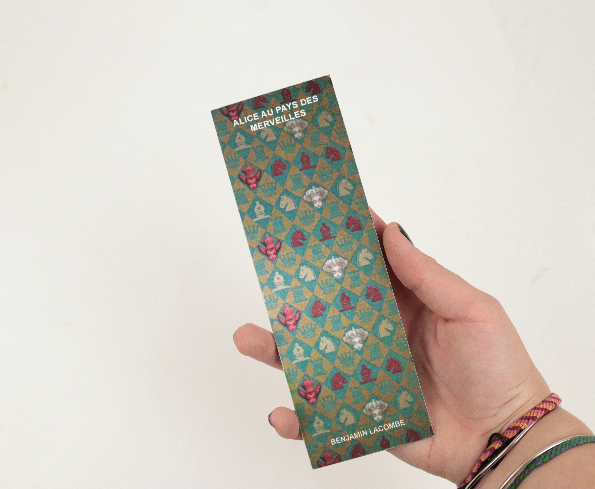
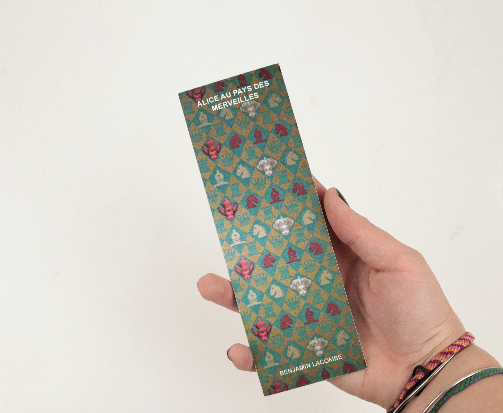

Réalisation d’un coffret d'artiste dédié à l'illustrateur français Benjamin Lacombe. Le coffret comprend un jeu de 7 familles, deux ensembles de 4 marque-pages chacun (1 ensemble par coffret, chaque ensemble constituant un lot différent). Il inclut également le poster de l'exposition et trois posters interactifs basés sur le principe des points à relier, proposant trois niveaux de difficulté. Trois de ses œuvres, à savoir « Alice au pays des merveilles », « La petite sirène » et « L’étonnante famille Appenzell », sont mises en avant dans l'édition principale, l'édition de référence, ainsi que sur les marque-pages et les posters.
«Les collections» est un coffret regroupant non seulement trois œuvres qui ont profondément marqué Benjamin Lacombe, mais aussi trois livres présentant des esthétiques et des sensibilités différentes.


 
